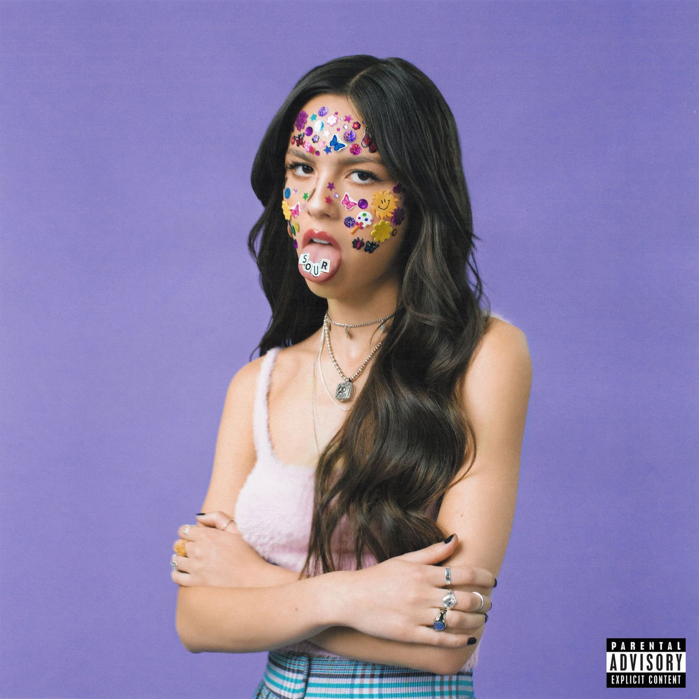

Mi nombre es Lizet, pero la mayoría me llama Liz. Amo dibujar y leer, prefiero el frío al calor y suelo tener mucho sueño.
Leer

Olivia Rodrigo es mi artista favorita. Su m[usica siempre ha conectado conmigo a un nivel muy personal.Por otra parte, admiro su creatividad y filosofía artístic